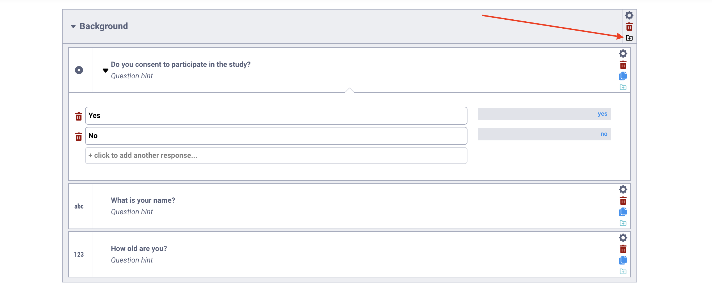
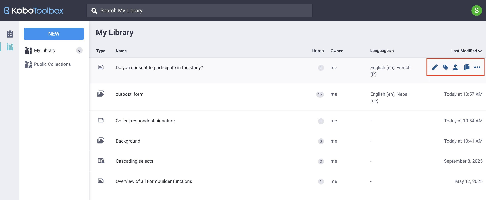
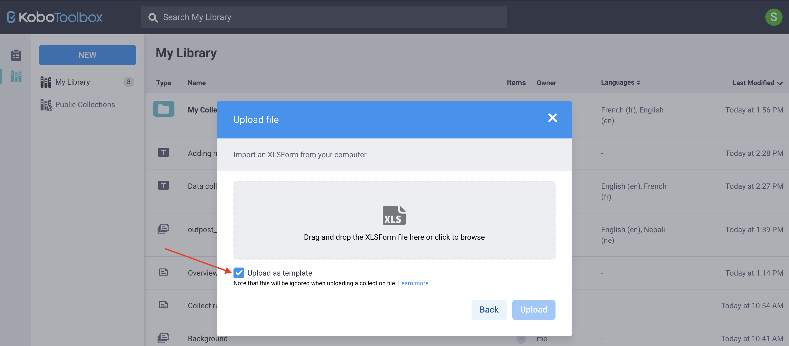

Search the knowledge base, browse our resources, and visit our Community Forum for more detailed information
Dernière mise à jour : 25 Mar 2026
La bibliothèque de questions de KoboToolbox vous permet de sauvegarder, de réutiliser et de partager des questions dans plusieurs formulaires. Plutôt que de recréer des questions et des choix de réponse fréquemment utilisés, vous pouvez les stocker dans la bibliothèque et les insérer rapidement dans de nouveaux formulaires.
La bibliothèque de questions peut contenir des questions individuelles, des blocs de questions et des modèles de formulaires complets. Vous pouvez également organiser votre contenu à l’aide de collections pour regrouper des éléments connexes par projet, thème, pays ou organisation.
L’utilisation de la bibliothèque de questions contribue à maintenir la cohérence entre les projets, simplifie le processus de création de formulaires et facilite le partage de contenu standardisé avec les autres membres de votre équipe. Vous pouvez accéder à la bibliothèque de questions depuis le menu de gauche du site KoboToolbox.

Note : La bibliothèque de questions de KoboToolbox peut contenir du contenu public et privé. Cet article porte sur Ma bibliothèque, où vous pouvez sauvegarder, organiser, réutiliser et partager vos propres questions, blocs de questions et modèles de formulaires. Pour en savoir plus sur la mise à disposition publique du contenu de la bibliothèque, consultez l'article Collections publiques dans la bibliothèque KoboToolbox.
Cet article couvre les sujets suivants :
Ajouter des questions à la bibliothèque de questions et les utiliser dans vos formulaires
Ajouter des modèles à votre bibliothèque de questions et créer des formulaires à partir de modèles
Utiliser des collections pour organiser votre contenu
Lorsque vous créez un formulaire dans l”interface de création de formulaires KoboToolbox (KoboToolbox Formbuilder), vous pouvez sauvegarder n’importe quelle question dans votre bibliothèque de questions en cliquant sur Ajouter une question à la bibliothèque dans le menu latéral droit de la question.

Cette approche préserve tous les composants de votre question, notamment les choix de réponse, les traductions, les options de questions, la logique de saut et les critères de validation.
Note : Lorsque vous ajoutez une question à votre bibliothèque, une copie de la question est sauvegardée. Les modifications apportées à la question d'origine n'affectent pas la version sauvegardée.
Vous pouvez également ajouter un groupe de plusieurs questions à la bibliothèque de questions en cliquant sur Ajouter une question à la bibliothèque au niveau du groupe. Le groupe est sauvegardé en tant que bloc de questions.

Vous pouvez également créer des questions directement depuis la bibliothèque de questions :
Cliquez sur Bibliothèque dans le menu de gauche pour ouvrir la bibliothèque.
Cliquez sur NOUVEAU en haut à gauche.
Sélectionnez Bloc de questions. Le Formbuilder s’ouvre, vous permettant d’ajouter la question ou le groupe de questions que vous souhaitez sauvegarder.
Cliquez sur Créer en haut à droite pour sauvegarder le bloc de questions dans votre bibliothèque.

Vous pouvez importer des questions ou des blocs de questions depuis un XLSForm en cliquant sur Importer sous Créer un élément de Bibliothèque et en important un XLSForm.
Dans la vue Ma bibliothèque, vous pouvez voir toutes les questions et tous les blocs de questions sauvegardés. Pour chaque élément, vous pouvez consulter des informations telles que le nombre de questions incluses, le propriétaire, les langues disponibles et la date de dernière modification.
Pour chaque élément sauvegardé, vous pouvez le survoler pour :
Modifier la ou les questions dans le Formbuilder
Ajouter des tags pour faciliter l’organisation et la catégorisation des éléments afin de simplifier la recherche
Partager l’élément avec d’autres utilisateurs en leur attribuant des autorisations de consultation, de modification ou de gestion
Cloner l’élément pour créer un doublon que vous pouvez modifier indépendamment
Cliquer sur Plus d’actions pour gérer les traductions, télécharger l’élément au format XLS ou XML, ou le supprimer

Vous pouvez également cliquer sur n’importe quel élément sauvegardé pour afficher ses détails complets, notamment toutes les questions contenues dans un bloc de questions.
Une fois que vous avez ajouté des questions à votre bibliothèque, vous pouvez les utiliser dans de futurs formulaires. Pour utiliser des questions de la bibliothèque dans votre formulaire :
Ouvrez votre formulaire dans le Formbuilder.
Cliquez sur Ajouter à partir de la bibliothèque dans le coin supérieur droit.
Sélectionnez la question ou le bloc de questions que vous souhaitez ajouter, puis faites-le glisser et déposez-le à l’emplacement souhaité dans votre formulaire.
Si votre bibliothèque de questions contient de nombreux éléments, vous pouvez utiliser la fonction Recherche pour localiser rapidement la question ou le bloc dont vous avez besoin.

Note : Lorsque vous ajoutez une question de votre bibliothèque à un formulaire, les modifications que vous apportez dans le formulaire n'affectent pas la version d'origine sauvegardée dans la bibliothèque.
En plus de sauvegarder des questions individuelles ou des blocs de questions, vous pouvez créer des modèles de formulaires complets pouvant être convertis en projets KoboToolbox. Les modèles sont utiles pour standardiser des formulaires complets qui peuvent être réutilisés par différentes équipes, dans différents projets ou pays.
Note : Un bloc de questions est un groupe de questions pouvant être inséré n'importe où dans un formulaire, tandis qu'un modèle contient un formulaire complet pouvant devenir un projet.
Vous pouvez créer un modèle depuis votre bibliothèque de questions ou à partir d’un formulaire KoboToolbox existant.
Depuis votre bibliothèque de questions, vous pouvez :
Cliquer sur NOUVEAU > Modèle. Vous serez redirigé vers le Formbuilder pour concevoir le formulaire après avoir saisi les détails du modèle.
Cliquer sur NOUVEAU > Importer, importer un XLSForm et sélectionner Importer comme modèle.

Note : Si vous utilisez XLSForm, vous pouvez créer des modèles verrouillés qui empêchent d'autres utilisateurs de modifier certaines parties du formulaire. Pour en savoir plus, consultez l'article Verrouillage de questionnaire avec XLSForm.
Pour créer un modèle à partir d’un formulaire KoboToolbox existant :
Ouvrez la page FORMULAIRE du projet.
Cliquez sur Plus d’actions dans le coin supérieur droit.
Sélectionnez Créer un modèle.

Depuis la page Ma bibliothèque, vous pouvez gérer les modèles de la même manière que les questions ou les blocs de questions. Vous pouvez les partager avec d’autres utilisateurs, ajouter des tags, modifier les détails ou les supprimer.
Vous pouvez utiliser un modèle pour créer un nouveau projet de formulaire depuis votre bibliothèque de questions ou depuis votre page d’accueil Projets.
Depuis la bibliothèque de questions :
Survolez le modèle et cliquez sur Créer le projet à droite.
Saisissez un nom pour le nouveau projet.

Depuis la page d’accueil Projets :
Cliquez sur NOUVEAU et sélectionnez Utiliser un modèle.
Choisissez un modèle sauvegardé et cliquez sur Suivant.
Saisissez les détails du projet et cliquez sur Créer le projet.
Dans les deux cas, un nouveau projet KoboToolbox sera créé, que vous pourrez modifier et déployer.

Note : La modification d'un projet créé à partir d'un modèle ne modifie pas le modèle d'origine.
Une collection est un groupe de questions, de blocs de questions et/ou de modèles organisés ensemble parce qu’ils sont liés au même projet, thème, pays ou autre contexte commun. Les collections vous aident à structurer et à gérer le contenu réutilisable dans votre bibliothèque de questions.
Pour créer une collection :
Depuis votre bibliothèque de questions, cliquez sur NOUVEAU et sélectionnez Collection.
Saisissez un nom et, si vous le souhaitez, ajoutez une courte description, une organisation, un secteur primaire et un pays. Ces champs sont facultatifs.
Ajoutez des tags pour faciliter la catégorisation et l’organisation de votre collection.
Cliquez sur Créer.

Note : Si vous souhaitez importer un grand nombre de questions ou de blocs de questions dans votre bibliothèque sous forme d'une seule collection, vous pouvez le faire à l'aide d'un XLSForm. Pour en savoir plus, consultez l'article Importer une collection avec XLSForm.
Après avoir créé la collection, vous serez redirigé vers la page principale de la collection, qui affichera le message : « Il n’y a pas d’actifs à afficher. »
Vous pouvez ajouter des questions, des blocs de questions ou des modèles à une collection de plusieurs façons :
Depuis la page de la collection :
Cliquez sur NOUVEAU > Bloc de questions pour créer une nouvelle question ou un nouveau bloc dans le Formbuilder et le sauvegarder dans la collection.
Cliquez sur NOUVEAU > Modèle pour créer un modèle et le sauvegarder dans la collection.
Depuis Ma bibliothèque, survolez un élément existant, cliquez sur Plus d’actions et choisissez le nom de votre collection sous Déplacer sous.

Note : Vous ne pouvez pas créer de collections imbriquées. Si vous créez une collection à l'intérieur d'une autre collection, elle sera sauvegardée en tant que collection distincte.
Pour retirer un élément d’une collection, cliquez sur Plus d’actions dans la ligne de l’élément et sélectionnez Retirer de la collection.
Vous pouvez gérer votre collection depuis la page Ma bibliothèque en la survolant et en sélectionnant les options disponibles pour modifier ses détails, ajouter des tags, la partager avec d’autres utilisateurs, ou la supprimer. Vous pouvez également effectuer ces actions directement depuis la page de la collection.
Note : La suppression d'une collection supprime définitivement tous les éléments qu'elle contient.
Pour rendre une collection publique, ouvrez la collection et cliquez sur le bouton Rendre public dans le coin supérieur droit. Notez que les champs nom, organisation et secteur doivent être renseignés avant qu’une collection puisse être rendue publique.
Pour en savoir plus sur les collections publiques, consultez l'article Collections publiques dans la bibliothèque KoboToolbox.
Did you find what you were looking for? Was the information clear? Was anything missing?
Share your feedback to help us improve this article!